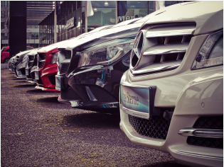

Après un entretien ou une révision auto, l’automobiliste une fois vous avoir déposé son véhicule en concession, repartait avec un véhicule de prêt, dit aussi de courtoise. À condition que celui-ci l’ait réservé au préalable. Évidemment, l’offre de véhicules de courtoisie disponibles en concession est limitée et un système de réservation est donc nécessaire pour pouvoir encadrer cette offre et cette demande. Mais lorsque cette demande est supérieure à l’offre de véhicules que vous pouvez prêter, vous pouvez peut- être perdre un client qui a besoin impérativement d’un moyen de transport pour se déplacer le temps que son véhicule soit immobilisé au garage. Il pourra aller voir ailleurs, trouver un autre moyen par le biais de ses connaissances pour avoir un véhicule de prêt, trouver un loueur, etc. Cependant, son expérience client en sera impacté par le fait qu’il n’ait pas eu de solution de mobilité proposée par sa concession ou quelconque moyen mis en place.
Certes, à part agrandir votre parc de véhicules de courtoisie qui représente un coût supplémentaire conséquent, vous pensez ne pas pouvoir faire grand chose. Détrompez- vous, vous pouvez tout à fait proposer à vos clients des nouvelles solutions de mobilité douces (vélos, scooters, trottinettes électriques) qui leur permettra au même titre qu’un véhicule, de se déplacer le temps d’une journée pour des trajets plus ou moins courts et dans des métropoles facilitant l’intermodalité avec un réseau de transport développé.
Ces nouveaux besoins utilisateur s'expliquent notamment par le fait que les trajets en ville et de courte distance sont les plus polluants et les plus consommateur en CO2. Une récente enquête de l'Ifop menée sur le second semestre 2021 révèle que 10% des Français ont changé leur moyen de transport pour se rendre à leur lieu de travail. Un changement en grande partie dû à la crise sanitaire mettant en avant ces différents modes de déplacement.
Depuis avril 2022, nous avons lancé et élargi notre offre de service et avons ainsi créé une plateforme de gestion des mobilités. Mais de quoi parle-t-on véritablement ? Tout d’abord, cette plateforme a été imaginée dans le but de simpli er et accompagner le lancement de nouvelles solutions de mobilité pour tous les concessionnaires et professionnels de l’automobile qui souhaitent offrir à leurs clients un service après- vente supplémentaire et améliorer leur délisation client par la même occasion. Vous vous occupez de fournir vos besoins en solutions de mobilité douces et nous vous permettons de toutes les référencer sur une seule et même plateforme de gestion et de réservation.
Vous pouvez également référencer vos véhicules de courtoisie et mettre en place un service de jockeys, réservable et encadrable avec le moins d’efforts possibles. Ainsi, la plateforme permet à vos clients de réserver eux-mêmes la solution qu’ils désirent. Vous pouvez alors proposer un parcours 100% digital qui vous permettra d’apporter de nouveaux services à vos clients et nous vous apportons le soutien pour faciliter et gérer la mise en place de ces nouvelles solutions.
Vous pouvez également référencer vos véhicules de courtoisie et mettre en place un service de jockeys, réservable et encadrable avec le moins d’efforts possibles. Ainsi, la plateforme permet à vos clients de réserver eux-mêmes la solution qu’ils désirent. Vous pouvez alors proposer un parcours 100% digital qui vous permettra d’apporter de nouveaux services à vos clients et nous vous apportons le soutien pour faciliter et gérer la mise en place de ces nouvelles solutions. Pour en savoir plus sur la plateforme de gestion des mobilités Brikks, rendez-vous sur notre espace contact.